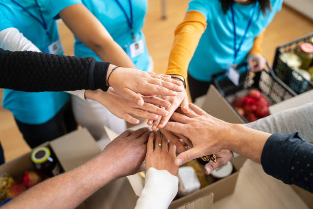

Nossos Projetos Sociais
A Ajuda Solidária desenvolve iniciativas que impactam comunidades carentes, como distribuição de alimentos, educação infantil e apoio a famílias em situação de vulnerabilidade. Cada projeto é construído com base na solidariedade e no trabalho em equipe.
Voluntariado
Junte-se a nós como voluntário! Oferecemos oportunidades em diversas áreas, como arrecadação de doações, eventos comunitários e apoio direto às famílias. Não é necessário experiência prévia – apenas disposição para ajudar. Cadastre-se na página de cadastro para começar.
Como Doar
Sua doação transforma vidas. Você pode contribuir de várias formas:
- Doação financeira: Via PIX ou transferência bancária (contate-nos para detalhes).
- Itens essenciais: Alimentos não perecíveis, roupas e materiais escolares.
- Tempo e habilidades: Participe como voluntário.
Para doar, preencha o formulário de cadastro ou entre em contato diretamente. Toda contribuição é bem-vinda!